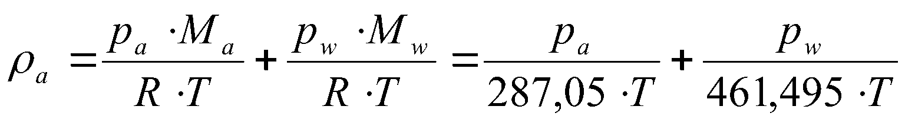

Háskóli Íslands – Umhverfis og byggingarverkfræðideild Húsagerð
Björn Marteinsson
4. 4. Lofthreyfing við hús, þrýstimunur yfir byggingarhluta og loftskipti
4.1. 4.1 Almennt
Lofthreyfing og loftþrýstingur við byggingar hefur áhrif á þá áraun sem bygging verður fyrir; álag á byggingarhluta, loftskipti í byggingu, loftleka í gegnum byggingarhluta og jafnvel vatnsleka. Hér verður fjallað um lofthreyfinguna almennt og það þrýstifall sem hún veldur yfir byggingu í heild og einstaka byggingarhluta.
Lofthreyfing í og við byggingu orsakast af þrýstimun sem á uppruna sinn í vindáhrifum, áhrifum hitamunar og vélrænni loftræsingu.
Almennar líkingar og gildi;
{kind=link}
þar sem a eðlisþéttleiki lofts, kg/m3
pa loftþrýstingur (þurrt loft), Pa
pw rakaþrýstingur, Pa
T hitastig, K
Kvik seigja lofts; a=(17.1+0.049)10-6N·s/m2
4.2. 4.2 Lofthreyfing við byggingu og loftþrýstingur
Áhrif vinds
Hérlendis er vindur almennt langmikilvægasta orsök lofthreyfinga í og við byggingu. Þegar loftið lendir á fyrirstöðu þá breytir það um stefnu og missir jafnframt hluta af hreyfiorku sinni. Samkvæmt jöfnu Bernoulli’s þá er summan af hreyfiorku, þrýstiorku og stöðuorku fasti, en varðandi vindálag á byggingar má líta svo á að stöðuorkan breytist lítið.
½∙∙v2+pa+g∙h∙=fasti (4.1)
þar sem eðlisþéttleiki lofts, kg/m3 (1,25 kg/m3 við 10 °C og 101300 Pa)
v vindhraði, m/s
pa loftþrýstingur í ótrufluðu streymi, Pa
g fallhröðun jarðar, m/s2
h hæð (yfir viðmiðunarplani), m
Venja er að gefa upp vindþrýsting á flatareiningu, p, sem (jafna 4.2);
p=∙q (4.2)
þar sem p þrýstingur, Pa
formstuðull, -
q grunnálag vinds, Pa
og
q=½∙∙v2 (4.3)
Athuga skal að þrátt fyrir beina samsvörun milli jöfnu 4.3 og fyrsta lið í Bernoulli jöfnunni (4.1) þá er í ákvörðun vindálagsins ekki endilega gengið útfrá því að öll hreyfiorkan breytist í þrýsting, heldur er formstuðullinn ákvarðaður (með mælingum) þannig að jafna 4.2 gildir þegar grunnálagið er reiknað samkvæmt jöfnu 4.3.
Formstuðla yfirborðs, , má t.d. fá úr álagsstöðlum fyrir vindálag, mynd 4.1.
{kind=link}
Mynd 4.1 Formstuðlar vindálags á byggingu (heimild: staðallinn DS 410, gömul útgáfa)
Í stöðlum er almennt miðað við að þrýstingur innanhúss geti verið ýmist undir- eða yfirþrýstingur miðað við þrýsting í ótrufluðu streymi utandyra. Formstuðull innri þrýstings er háður dreifingu lekastaða í hjúpfleti og hugsanlegum innri lokunum í húsinu.
Í staðlinum DS 410 er gert ráð fyrir að formstuðull innanhúss geti verið hvort sem er 0,2 (yfirþrýstingur) eða -0,3 (undirþrýstingur) þegar gert er ráð fyrir að loftlekastaðir séu jafndreifðir á hjúpveggjum og engir skilveggir.
Útfrá jöfnu 4.2 má þá reikna ástreymisþrýsting, og mismunaþrýsting fyrir byggingarhluta að einhverjum formstuðlum og vindhraða gefnum. Athuga skal að þrýstimunurinn er drifkraftur loftunar í rásinni, en þrýstimunur milli hitaðs rýmis og loftrásar getur einnig valdið loftskiptum milli rýmis og rásar, mynd 4.2.
Dæmi 4.1. Reiknað þrýstifall yfir vegg vegna vinds sem stendur þvert á flötinn. Gert er ráð fyrir að loftlekastaðir dreifist jafnt á alla veggfleti (og því undirþrýstingur í húsinu).
Vindhraði í ótrufluðu streymi v=5 m/s (algengur meðalvindhraði í Reykjavík).
Formstuðull úti áveðurs e=0,7, formstuðull inni e=-0,3, eðlisþéttleiki lofts a=1,25 kg/m3
Grunnálag vinds (jafna 4.3); q= ½∙a∙v2= ½∙1,25∙52= 15,6 Pa
Þrýstifall yfir vegginn (jafna 4.2); p=∙q=(0,7-(-0,3))∙15,6 Pa= 15,6 Pa
Dæmi 4.2 Reiknað þrýstifall yfir loftrás í þaki vegna vinds beint á rásina áveðurs.
Vindhraði í ótrufluðu streymi v=5 m/s (algengur meðalvindhraði í Reykjavík).
Formstuðull (formstuðlar við op inn í rásina verða þeir sömu og á veggfletina hvoru megin) áveðurs 1=0,7, hlémegin 2=-0,5, þéttleiki lofts a=1,25 kg/m3
Grunnálag vinds (jafna 4.3); q= ½∙a∙v2= ½∙1,25∙52= 15,6 Pa
Þrýstifall yfir rásina (jafna 4.2); p=∙q=(0,7-(-0,5))∙15,6 Pa= 18,7 Pa

Þrýstibreyting vegna hitamunar (skorsteinsáhrif)
Loftsúla af hæð h mun valda loftþrýstingi p1 við neðri enda súlunnar, jafna 4.4;
p1=1∙g0∙h+p0 (4.4)
þar sem p1 loftþrýstingur við botn súlu, Pa
1 eðlisþéttleiki lofts, kg/m3
g0 fallhröðun til jarðar, m/s2
h hæð súlu, m
p0 loftþrýstingur við topp súlu, Pa
Eðlisþéttleiki lofts má finna útfrá almenna gaslögmálinu og samlagningu hlutþrýstings á þurru lofti og rakaþrýstingi, jafna 4.5;
|image1| (4.5)
þar sem a eðlisþéttleiki lofts, kg/m3
pa loftþrýstingur (þurrt loft), Pa
pw rakaþrýstingur, Pa
Ma mólmassi þurrs lofts, kg/kmól
Mw mólmassi vatns, kg/kmól
T hitastig, K
R almenni gasfastinn, J/(kmól∙K)
Þéttleiki lofts breytist línulega í öfugu hlutfalli við breytingu á hitastigi, í jöfnu 4.4 má því nota gildi fyrir meðalþéttleika loftsins.
Inniloft er hérlendis nánast alltaf hlýrra heldur en útiloft og af þessu hlýst þrýstimunur milli inni- og útilofts, hversu mikill þrýstimunurinn er fer eftir hitamun í lofti og hæð byggingar (eða loftrásar). Ef inniaðstæður eru táknaðar með lágmerki i og útiaðstæður með e, þá fæst heildarþrýstimunurinn sem, jafna 4.6;
p=pi-pe= g0∙h∙(i-e)= g0∙h∙i∙(1-e/i)~ g0∙h∙i∙(1-Ti/Te) (4.6)
Þrýstimunur milli úti- og inniaðstæða fer eftir staðsetningu tenginga (opa) milli rýmanna. Þessu má lýsa eins og sýnt er í mynd 4.3.
Mynd 4.3 Þrýstimunur vegna hitastigsmunar
Op einungis efst
Op dreifð um allan hjúpinn (eða aðalop um miðja vegghæð)
Op einungis neðst
Dæmi 4.3: Reiknaður þrýstimunur inni og úti við gólf einnar hæðar húss þar sem 0-lína þrýstifalls (opnir gluggar) liggur í hæðinni 1,5 m yfir gólfi. i= 22 °C, e= -2 °C, m~1,25 kg/m3
p=pi-pe~ g0∙h∙m∙(1-Ti/Te)=9,81∙1,5∙1,25∙ (1-(273+22)/(273-2))= -1,5 Pa
Dæmi 4.4: Reiknaður þrýstimunur inni og úti við gólf 5 hæða stigahúss sem loftræst er upp úr þaki, i= 22 °C, e= -2 °C, m~1,25 kg/m3, hver hæð er 2,7 m.
p=pi-pe~ g0∙h∙m∙(1-Ti/Te)=9,81∙(4∙2,7)∙1,25∙ (1-(273+22)/(273-2))= -10,8 Pa
Þrýstimunur vegna mismunahita er almennt lítill, og oftast mun minni heldur en þrýstimunur vegna vinds. Í einstaka tilvikum getur hitamunur þó haft umtalsverð áhrif, t.d. eru þekkt dæmi um að loftpoki í mæni á bröttum, loftræstum þökum hafi teppt loftun þakanna.
4.3. 4.3 Rakaflutningur vegna loftstreymis
Rakaflutningur vegna loftstreymis verður í samræmi við jöfnu 4.7;
G=w∙Va (4.7)
þar sem G rakaflutningur, kg/s
w loftraki, kg/m3
Va loftstreymi, m3/s
Streymi í vökva eða póróttu efni má skrifa eins og jafna 4.8 sýnir, jafnan er kennd við Darcy;
|image3| (4.8)
þar sem Va streymi, m3/s
B0 lofthleypni efnis (e: air permeability), m2
kvik seigja, N·s/m2
dp/dx stigull þrýstings (t.d. loft-), Pa
Jafna 4.8 er umskrifað fyrir einsleitt efnislag þannig (jafna 4.9)
|image4| (4.9)
þar sem L lengd streymisrásar (þykkt efnislags), m
… aðrar stærðir sem fyrr
Iðulega eru efnisstuðlar og þykkt í jöfnu 4.9 teknar saman í eina stærð til einföldunar, jafna 4.10;
|image5| (4.10)
þar sem Rl lofthleypnimótstaða efnislags, m2∙s∙Pa/ m3
… aðrar stærðir sem fyrr
Gildi fyrir lofthleypni eru iðulega gefin upp annarsvegar sem hreint efnisgildi, B0 (sbr. jöfnur 4.8 og 4.9), hinsvegar sem samsett gildi úr efnisþykkt og seigju vökva eða lofttegundar, L/. Í töflu 4.1 eru gefin upp slík gildi fyrir nokkur efni.
Tafla 4.1 Lofthleypni efna (heimild: Nevander & Elmarsson, 1994) |
||||
Efni |
Þéttleiki kg/m3 |
Lofthleypni L/ x1 0-6m:sup: 3/(m∙s∙Pa) |
Lofthleypni efnis B0 x 10 -12m2 |
|
Tígulsteinn |
1470 |
0,005 – 0,05 |
0,1 – 1 |
|
Steypa |
0,000005 – 0,0005 |
0,0001 – 0,01 |
||
Frauðplast EPS |
30 - 500 |
500 - 10000 |
||
Steinull á yfirborð |
10 - 50 |
80 - 400 |
1500 - 7500 |
|
Steinull || yfirborði |
10 - 50 |
160 - 800 |
3000 - 15000 |
|
Steinull á yfirborð |
100 - 150 |
15 – 50 |
250 – 1000 |
|
Steinull || yfirborði |
100 - 150 |
30 – 400 |
500 - 2000 |
|
Spænir - lausir |
100 |
500 - 800 |
11500 |
Fyrir þunn efnislög með ákveðna gerð þá er oft heppilegt að gefa upp mælt gildi fyrir efnislagið beint en ekki sem efnisstuðul eins og sýnt er í töflu 4.1. Dæmi um slík gildi eru sýnd í töflu 4.2.
Tafla 4.2 Lofth leypnimótstaða efnislaga (heimild: Nevander & Elmarsson, 1994) |
|||
Efni |
Lýsing |
Lofth leypnimótstaða x 106m:s up:2∙s∙Pa/ m3 |
Lofthleypni efnislags B 0/L x 10 -12m |
Trétrefjaplata (opin) |
12,5 mm 260 kg/m3 |
0,05 |
300 |
Trétrefjaplata (opin) |
20 mm 280 kg/m3 |
0,1 |
175 |
Trétrefjaplata (þétt) |
3,5 mm, 400 kg/m3 |
10 |
1,5 |
Pappír |
200 g/m2 |
0,006 |
2850 |
Tjörupappi (gegnvættur) |
600 g/m2 |
9 |
2 |
Tjörupappi (húðaður) |
25-100 |
0,1-1,0 |
Lofthleypni flestra byggingarefna er mjög lítil, og rakaflutningur vegna lofstreymis þvert á byggingarhluta því almennt lítill í samanburði við t.d. rakaflæði. Þetta gildir þó alls ekki um t.d. létta steinullareinangrun, sem þarf því iðulega að verja með sérstakri vinþéttingu (gustlokun).
Loftstreymi í loftbilum og opum
Þegar loftstreymi einkennist af lagstreymi (e: laminar flow) þá gildir jafna 4.9 og streymið er í beinu hlutfalli við þrýstistigulinn;
V~p
Í þröngum loftbilum og opum má almennt gera ráð fyrir iðustreymi og þá gildir jafna 4.9 ekki lengur, streymið verður nú í hlutfalli við rótina af þrýstistigulnum;
V~p
Samsvarandi þá verður milliástand lag- og iðustreymis í hlutfalli við;
V~p , 0,5 < < 1
Í útreikningi á streymi um loftbil, rifur og göt þá þarf að hafa í huga að heildarþrýstifall yfir loftleiðina ræður streyminu; hluti þrýstifalls verður við inn- og útstreymi og hluti á leið lofts um rásina (gildir sérstaklega um rifur og göt í þykkum efnum miðað við gatstærð). Þrýstifall yfir loftrás er því almennt summan af minnst þrem tapliðum (mynd 4.4);
Í sumum tilvikum geta verið stakar mótstöður í loftrásinni sem taka þarf tillit til. Hlutfallslegt vægi þrýstitapsliðanna er háð innbyrðis stærðarhlutföllum, hrjúfleika, lengd rásar og lögun.
Inn- og útstreymistöp fyrir venjulegar aðstæður í byggingarefnum og byggingarhlutum (iðustreymi) má reikna samkvæmt jöfnu 4.11;
|image6| (4.11)
þar sem tapstuðull, ef gildið er ekki þekkt má nota =1,8 (sjá annars töflu 4.3)
þéttleiki vökva eða lofttegundar
Va streymi, m3/s
A þverskurðarflatarmál, m2
Tafla 4.3 Þrýstitapstuðull rásar (Andri Páll Hilmarsson, 2007) |
|
Gerð rásar |
Þrýstitapstuðull, 1 |
Rör; D=33 mm, með plastraufum, L= 297 mm |
6,10 |
Rör; D=40 mm, með plastraufum, L= 400 mm |
4,50 |
Rör; D=33 mm, með neti, L= 340 mm |
2,91 |
Rör; D=33 mm, opið, L= 297 mm |
1,70 |
Rör; D=40 mm, opið, L= 400 mm |
1,77 |
Rás; 14x115mm krossviðarrás, þykkt 14mm (L= 14 mm) |
1,72 |
Rás; 15x100 mm skarð í 45 mm sperru (L=45 mm) |
1,50 |
Gat; D=26 mm í 45 mm sperru (L=45 mm) |
1,25 |
Gat; D=38 mm í 45 mm sperru (L=45mm) |
1,14 |
Fyrir aflanga rás (eða loftbili) gildir fyrir lagstreymi svonefnd Hagen-Poiseuille jafna, 4.12, (sjá einnig mynd 4.5);
|image8| (4.12)
þar sem Va streymi, m3/s
A þverskurðarflatarmál =b∙d, m2
b þykkt loftbils, m
kvik seigja, N∙s/m2
p þrýstifall yfir streymislengd L, Pa Mynd 4.5 Loftrásir; stærðir
L streymislengd, m
Fyrir sívala rás gildir fyrir lagstreymi jafna 4.13 (sjá einnig mynd 4.5)
|image9| (4.13)
þar sem A þverskurðarflatarmál =∙d2/4, m2
d þvermál gats, m
… aðrar stærðir sem fyrr
Heildarþrýstifall í streymi verður því í stökum rifum eða rörum, jöfnur 4.14 og 4.15;
Rifa: (4.14)
Rör: (4.15)
Þegar gert er ráð fyrir að loftið (eða vökvinn) pressist ekki saman í streyminu (eðlileg forsenda við þessar aðstæður) þá er loftstreymið Va það sama í öllum sniðum í rásinni. Reiknað hlutfall Va/A fyrir mismunandi hluta rásar gefur þá meðalstreymishraða í sniðinu; vm=Va/A.
Í einstaka tilvikum er hægt að líta framhjá tapliðum vegna inn- og útstreymis og einfaldast reikningarnir þá nokkuð, í öðrum tilvikum verður að leysa annarargráðujöfnu 4.14 eða 4.15 fyrir loftstreyminu Va og reikna síðan meðal streymishraðann vm ef vill fyrir einstaka hluta rásarinnar.
Jöfnurnar 4.12 og 4.13 (og þá einnig hluti jafnanna 4.14 og 4.15) gilda einungis fyrir lagstreymi. Lagstreymi er talið gilda þegar eftirfarandi skilyrði er uppfyllt (viðmiðunargildi, ekki nákvæm mörk);
Reynoldstalan < 2300
þar sem vm meðalstreymishraði, m/s
dH streymiskennitala þversniðs, m dH=4A/U, A=flatarmál, U=ummál
eðlisseigja, m2/s
Fyrir Re>2300 er hreint lagstreymi ekki endilega til staðar og athuga þarf sérstaklega hvaða áhrif þetta kann að hafa.
Iðulega er loftrás samsett úr rað- og samsíðatengingum ólíkra hluta loftrása. Heildarmótstöðu, og streymi í einstökum greinum, má þá finna með reikningum sem byggja á sömu aðferðum og notaðar eru til að reikna straum í rafrás sem einungis samanstendur af mótstöðum.
Dæmi 4.5 Reiknað loftstreymi í loftrás þaks, og lofthraði í einstökum hlutum hennar.
Heildarþrýstifall yfir rásina er 18,7 Pa (sjá Dæmi 4.2).
Loftrásin er uppbyggð þannig;
Loftbil (b∙d∙L, sjá mynd 4.4) 25∙550∙10000 mm,
Op inn í og út úr loftbili eru tvö rör D40 mm hvoru megin, Lrör = 300 mm.
Arör=1256 mm2 (eitt rör!)
Aloftb=13750 mm2
Meðallofthiti í rás; =5 °C; -> =(17+0,049∙5) ∙10-6 = 17,2∙10-6 N∙s/m2
Athuga skal að loftrásin er uppbyggð sem röð af rásum (rör-loftbil-rör) og þrýstitöp í rásin verða hér (streymistapi í sjálfum rörleggjunum sleppt);
p = pinn + pút + prás + pinn + pút
rör loftbil rör
Streymistap í rörum áveðurs (jafna 4.11) ;
páv=1,8∙(1,25/2)∙(Va/(2∙1256∙10-6))2= 178284∙Va2
Streymistap í loftbili (jafna 4.12);
pbil=(12∙ 17,2∙10-6∙ 10000∙10-3 / ((25∙10-3)2 ∙13750∙10-6)) ∙Va = 240,2∙Va
Streymistap í rörum hlémegin (sama og áveðurs) ;
phlé= = 178284∙Va2
Jafnan fyrir heildartapið verður;
18,7 = 2∙178284∙Va2+240,2∙Va
og reiknað streymi, Va, fæst sem;
Va= 0,0069 m3/s
Reiknaður meðallofthraði;
Rör; vrör= 0,0069/(2∙1256∙10-6)) = 2,75 m/s (gefur Re=7990)
Loftbil; vloftbil= 0,0069/(13750∙10-6)) = 0,50 m/s (gefur Re=1738)
Af dæminu má draga eftirfarandi ályktanir;
1. Í þessu tilfelli þá skipta streymistöp í loftbilinu svo til engu máli borið saman við streymistöp vegna inn- og útstreymis (þetta gildir iðulega þegar um áberandi stakar þrengingar eða útvíkkanir er að ræða).
2. Lofthraði í opum inn í bilið getur verið allnokkur (slagar í vindhraðann úti) og því hætta á að skafi inn í bilið ef ekkert er að gert.
3. Loftstreymið er lítið, og þurrkun byggingarraka verður hæg (einkum yfir vetrartímann þegar loftið er kalt og tekur upp lítinn raka!).
4.4. 4.4 Loftþéttleiki húsa
Loftþéttleiki bygginga er áhugaverður þar sem þéttleiki húss hefur áhrif á orkunotkun og almennt hve auðvelt er að stýra inniaðstæðum. Óhjákvæmilegt er að einhverjir loftlekar verða alltaf til staðar í veðurhjúp bygginga, þessi loftleki er iðulega vegna dreifðrar lofthleypni byggingarhluta almennt, en göt og rifur geta haft mikil áhrif.
Loftþéttleikinn er mældur þannig að opum er lokað (þegar útiloka á áhrif t.d. hurða alveg þá eru rifur þéttar með límbandi) og loftdælu í spjaldi komið fyrir í hurðargætt eða gluggaopi. Loftdælan er með mælibúnaði þannig að mæla má dælt loftmagn og settur er upp mismunanþrýstimælir sem mælir þrýstimun úti og inni. Mæling er almennt gerð fyrir annarsvegar undirþrýsting og hinsvegar yfirþrýsting í húsi, og meðaltal tekið af niðurstöðum. Útfrá mæliniðurstöðum má setja upp jöfnu loftleka við þrýstifall, jafnan fær almennt formið (jafna 4.16);
Va=a∙Pb (4.16)
þar sem Va loftmagn, m3/klst
a,b stuðlar
P þrýstimunur úti og inni, Pa
Niðurstöður fyrir mæld loftskipti við 50 Pa í 231 húsi (flest í Reykjavík) eru sýndar í línuritum 4.1 og 4.2. Nánari umfjöllun um loftleka húsa og loftþéttleikamælingar má t.d. finna í Rb-blaði (I5).001 “Þéttleiki húsa” og grein eftir B. Marteinsson og J. Sigurjónsson (1997).
Áður var gerð krafa um hámarksloftskipti byggingar við 50 Pa, mælt eins og að ofan er lýst, en í gildandi byggingarreglugerð eru kröfur um mældan loftleka byggingarhluta við 50 Pa (Byggingarreglugerð, 2012);
Loftþéttleiki húsa.
13.5.1. gr
Kröfur
Tryggja skal að hús séu nægjanlega loftþétt til að koma í veg fyrir orkutap og að dragsúgur valdi ekki óþægindum.
Fyrir fullhitað húsnæði (Ti>18°C) skal miða við að þéttleiki byggingarflata í hjúpfleti sé nægjanlegur þannig að lofthleypni mæld við 50 Pa mismunaþrýsting sé minni heldur en töflugildi sýna.
Loftþéttleiki byggingarhluta skal vera skv. töflu 13.03
Tafla 13.03 Loftþéttleiki byggingarhluta
Íbúðarhúsnæði og aðrar byggingar þar sem gerðar eru sambærilegar kröfur til innivistar |
q50 < 3m3/m2,h |
Aðrar byggingar |
q50 < 6m3/m2,h |
q50 er loftstreymi mælt við 50 Pa mismunaþrýsting. |
Mæling eins og að ofan er lýst getur aðeins gefið meðalleka fyrir alla fleti byggingar. Með sérstökum búnaði má mæla einstaka byggingarhluta en erfitt er að útiloka jaðaráhrif (loftleka frá mælisvæði til aðliggjandi byggingarhluta) í slíkum mælingum.
Heimildir og ítarefni
Andri Páll Hilmarsson (2007) Loftun þaka og rakaálag, BSc ritgerð, Háskólinn í Reykjavík
P. Blom (1990) Ventilation av isolerte skrå tak, PhD thesis, NTH HBT-rapport 1990:D 10, Oslo, Norge
Byggingareglugerð nr. 112/2012 (sbr. reglug. nr. 1173/2012 og 350/2013), með áorðnum breytingum, Umhverfisráðuneytið, Reykjavík
B. Marteinsson, J. Sigurjónsson (1997) “Air-tightness of Buildings and the Required Heating Load - are Current Design Criteria Appropriate for a Windy region?”, Proc. International conference Cold Climate- HVAC’97, Reykjavík 30.5 - 2.5 1997, 7p.
DIF (1982) DS 410 Last på konstruktioner, 3. udgave juni 1982 (Dansk ingeniørforenings norm for), Teknisk forlag Normstyrelsens publikationer
Jón Viðar Guðjónsson (1990) Loftun þaka með þunnu loftbili, lokaverkefni í byggingartæknifræði við Tækniskóla Íslands, Reykjavík
Jón Viðar Guðjónsson og Ríkharður Kristjánsson (1991) “Loftun þaka með þunnu loftbili”, grein í Tæknivísir – blað byggingartæknifræðinema, Reykjavík
K. Lierch (1986) Belüftete Dach- und Wandkonstruktionen, band 1-4, Bauverlag GmbH-Wiesbaden und Berlin, Germany
J. Kronvall (1980) Air flows in building components, Report TVBH-1002, Division of building technology, Lund Institute of technology, Lund, Sweden
L. E. Nevander, B. Elmarsson (1994) Fukthandboken, Svensk byggtjänst, Stockholm
L. E. Nevander, I. Samuelsson (1976) Elementär byggnadsfysik, Kompendium i husbyggnadsteknik, Institutionen för byggnadsteknik, Tekniska Högskolan i Lund, Lund, Sverige
Rb-blað (1985) Þéttleiki húsa, Rb-blað (I5).001, Rannsóknastofnun byggingariðnaðarins, Keldnaholt, Reykjavík
1 Tapstuðullinn er reiknaður fyrir alla rásina, að því gefnu að streymið einkennist af iðustreymi
4.12